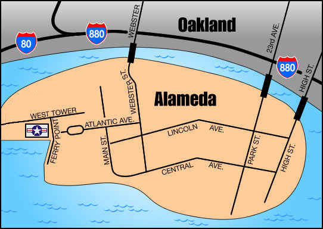

|  |
| Alameda Naval Air Museum is located in Bldg 77 at Alameda Point |
|
Free Parking and Wheelchair Accessible
|
|
From San Francisco: Take the Bay Bridge East, then follow the sign to "S. 880/ San Jose/ Alameda". After 3 miles, take the "Broadway/ Alameda" exit, and merge into the right lane. Turn right at the light onto 5th St., and follow for 1 mile, merging into the left lane. Take "Webster Street Tube" into Alameda. Follow Webster St. to W. Atlantic Ave. (1st light), and turn right. Follow Atlantic Ave. for 1 mile to Alameda Point and continue in another 1/3 mile. Turn right on Ferry Point.
From N. 880 (San Leandro, Hayward): Follow N. 880 to Oakland, and take the Broadway Exit. Turn right on Broadway (follow Alameda signs), right onto 7th, right onto Webster and through the Webster St. tunnel into Alameda. Follow S.F. directions from above. From Orinda, Lafayette, Concord, Moraga. Get on Highway 24(west) to 980/880(Downtown Oakland). Exit on 12th street and go straight onto Brush. Go left on 5th st to the Alameda exit to go to Webster Tunnel. Follow S.F. directions from above. |
Our Mission
| Founders Page
| Board Of Directors
| Museum Overview
Exhibits
| NAS History
| NADEP History
| Historic Photos
In Memory
| Membership
| Links
| Event Photos
Contact Us
| Reunions
| Veteran's Military Project